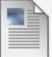

Assignment 5
Attached Files:
Homework8.png
(45.086 KB)
Step 1
- Make a page called Assignment5.html with the standard code template and upload to week-4 directory.
- Write the html that will recreate the page shown in the attached pdf file.
Step 2
- Edit your index.html in the root directory of your web account and add a relative link to your homework file.